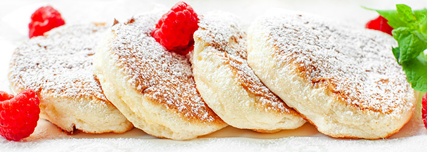

Japanese pancakes

Description
Fluffy Japanese pancakes
Easy recipe for japanese pancakes
Ingredients
- 2 egg yolks
- 1 teaspoon of fine sugar
- 2 tablespoons of milk (30 ml)
- 1 tablespoon of vegetable oil (15 g)
- 0.5 teaspoon of vanilla extract
- 5 tablespoons of wheat flour (45 g)
- 0.5 teaspoon of baking powder
- 3 egg whites
- a pinch of salt
- 2 tablespoons of fine sugar (30 g)
Steps
- Put egg yolks, fine sugar, milk, vegetable oil and vanilla extract into a bowl. Grind it with a mixer to a smooth paste. Add the flour with the baking powder and again mix with a spatula until smooth.
- In another bowl, place egg whites with salt. Beat to a stiff froth, then gradually, a teaspoon at a time, add sugar, all the while patiently beating the ingredients until the foam is thick, stiff and glossy, without sugar particles.
- Add 2 tablespoons of whipped foam to the egg yolk mixture and gently mix with a spoon. Add another 2 - 3 tablespoons of foam and mix again.
Add the rest of the foam, but in 2 - 3 batches, stirring very gently with a spoon so that the foam does not sink.Heat a non-stick pan (such as a pancake pan) on a high burner, then reduce the heat to low.
- Grease the pan with a thin layer of oil. Scoop half of the batter in 5 places in the pan, e.g. with an ice cream scoop or a confectionery sleeve with a large opening, or with a regular spoon. You can also fry in metal ramekins for even and high edges. Portions of the batter should be small in diameter, but should be tall.
- Sprinkle the pan with a little water and put the lid on. Heat for about 4 minutes, then flip with a spatula to the other side and repeat frying. Remove to a plate. Repeat frying with the rest of the batter. Sprinkle the pancakes with powdered sugar and add your favorite toppings.